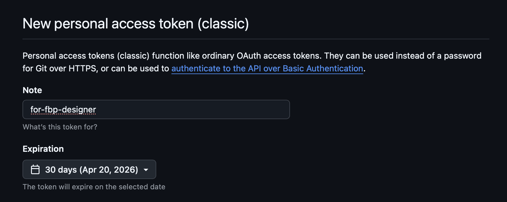
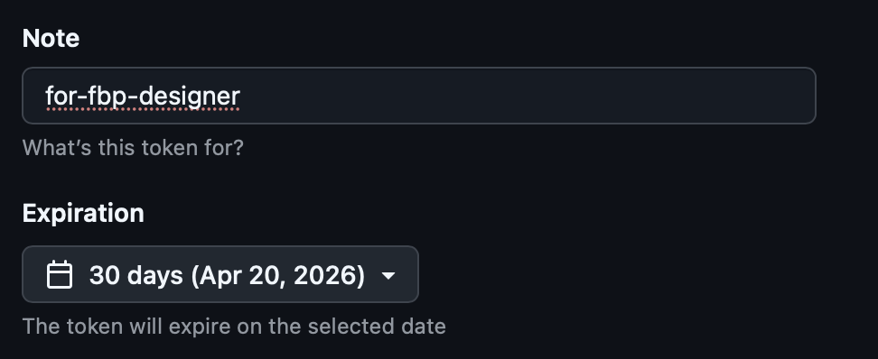
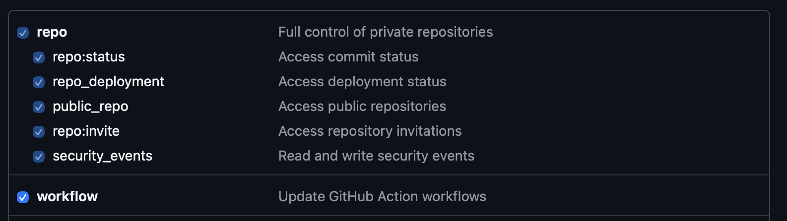
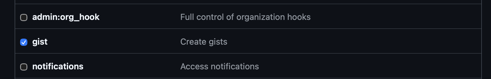
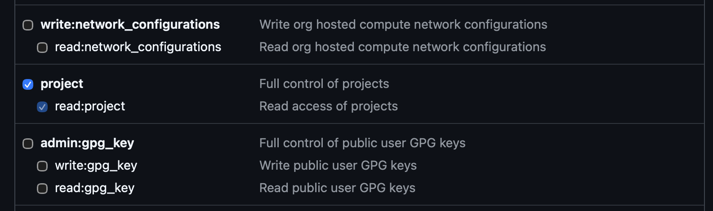
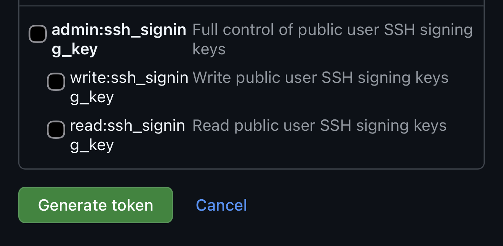
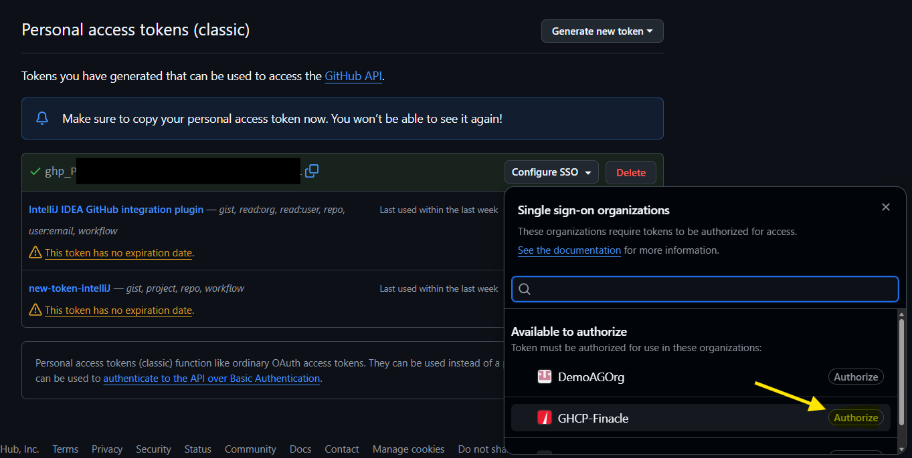
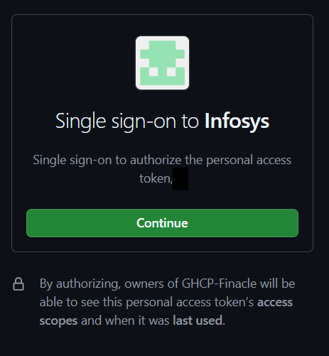
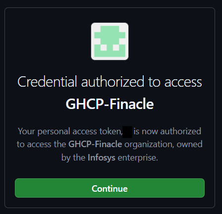
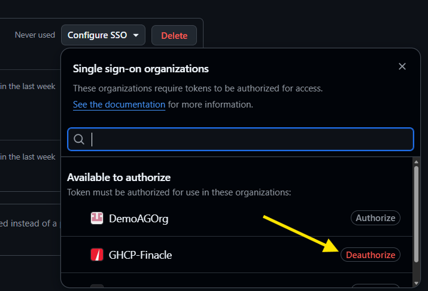

Prerequisites¶
Before using Designer, ensure you have the following:
1. GitHub ID¶
You will log in to Designer using your existing GitHub credentials. No separate account is needed.
2. GitHub Token (with GHCP-Finacle access & authorisation)¶
Designer needs a personal GitHub token that has access to GHCP-Finacle Org. This is required because:
- Designer clones repositories and creates pull requests under your identity rather than a centralised service account
- All code changes are attributed to you in the Git history
How to obtain a token¶
If you don't already have a token with the required access, follow these steps:
2.1 Create a new token¶
Navigate to https://github.com/settings/tokens/new

2.2 Provide the following details¶
2.2.1 Note & Expiration Date

2.2.2 Scopes — workflow, gist, project



2.2.3 Generate token

Note down the token provided on the screen.
2.3 Provide org authorisation¶
Follow the steps in the workflow below




3. Repository and Jira details¶
When you start working, Designer will ask you for:
- The repository name you are working on
- The Jira ticket number for your feature
Have these ready before you begin. See Setting Context for details.
Next step¶
Once you have these, proceed to Login And Setup.